THE VALUE INVESTOR'S SHELF
Books
107 books the investors we track keep recommending, from the first steps to advanced valuation, with a short note on why each one is worth your time.
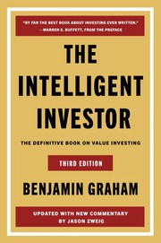
Start here Foundations · Beginner to intermediate
The Intelligent Investor
Benjamin Graham Li Lu's reading list Warren Buffett's picks
The founding book of value investing: margin of safety, and how to keep a cool head when Mr. Market swings between euphoria and panic.
View on Amazon
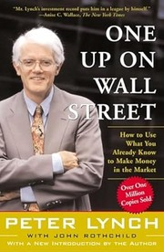
FOUNDATIONS · BEGINNER TO INTERMEDIATE
One Up On Wall Street
Peter Lynch
Peter LynchAn accessible guide to finding great companies in the shops, products and services you already know from everyday life.
View on Amazon
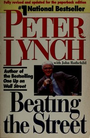
FOUNDATIONS · BEGINNER TO INTERMEDIATE
Beating the Street
Peter Lynch
Peter LynchThe practical sequel: Lynch walks through how he picked real stocks for the Magellan Fund.
View on Amazon
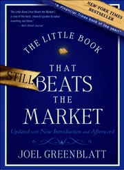
FOUNDATIONS · BEGINNER TO INTERMEDIATE
The Little Book That Still Beats the Market
Joel Greenblatt
The "magic formula": buy good businesses (high return on capital) at cheap prices, explained in plain language.
View on Amazon
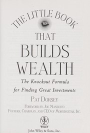
FOUNDATIONS · BEGINNER TO INTERMEDIATE
The Little Book That Builds Wealth
Pat Dorsey
A clear, direct manual for spotting durable competitive advantages, the moats that protect a company's profits.
View on Amazon
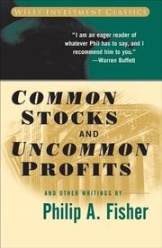
FOUNDATIONS · BEGINNER TO INTERMEDIATE
Common Stocks and Uncommon Profits
Philip A. Fisher
Li Lu's reading listHow to judge the quality of a business, its management and its long-term growth potential.
View on Amazon
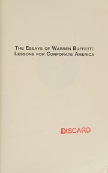
FOUNDATIONS · BEGINNER TO INTERMEDIATE
The Essays of Warren Buffett
Warren Buffett, ed. Lawrence Cunningham
Li Lu's reading listWarren Buffett's picksBuffett's letters to Berkshire Hathaway shareholders, arranged by theme: business, management and valuation.
View on Amazon
Investing for the Long Term
FOUNDATIONS · BEGINNER TO INTERMEDIATE
Investing for the Long Term
Francisco García Paramés
Value investing applied to European markets, combined with the Austrian school of economics.
View on Amazon
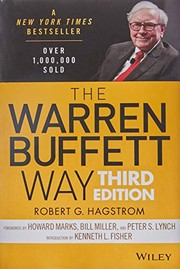
FOUNDATIONS · BEGINNER TO INTERMEDIATE
The Warren Buffett Way
Robert G. Hagstrom
Breaks down the twelve core principles Buffett uses to decide which businesses to buy.
View on Amazon
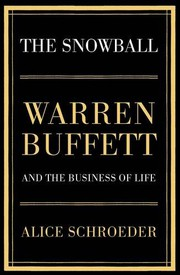
FOUNDATIONS · BEGINNER TO INTERMEDIATE
The Snowball
Alice Schroeder
Li Lu's reading listThe authorised biography of Warren Buffett, following how he grew as an investor and a businessman.
View on Amazon
ADVANCED VALUATION · ADVANCED
Security Analysis
Benjamin Graham & David Dodd
Li Lu's reading listThe 1934 technical treatise that laid the foundations of in-depth financial analysis.
View on Amazon
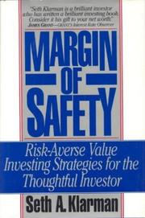
ADVANCED VALUATION · ADVANCED
Margin of Safety
Seth Klarman
Li Lu's reading listA cult classic, expensive and hard to find in print, on risk aversion and hunting for value in undervalued assets.
View on Amazon
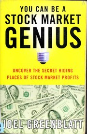
ADVANCED VALUATION · ADVANCED
You Can Be a Stock Market Genius
Joel Greenblatt
Li Lu's reading listSpecial situations in detail: spin-offs, restructurings and mergers.
View on Amazon
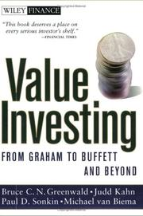
ADVANCED VALUATION · ADVANCED
Value Investing: From Graham to Buffett and Beyond
Bruce Greenwald
Columbia Business School's textbook that updates how to value assets and franchises.
View on Amazon
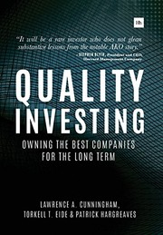
ADVANCED VALUATION · ADVANCED
Quality Investing
Lawrence Cunningham, Torkell Eide & Patrick Hargreaves
What the very best companies, those able to compound capital for decades, have in common.
View on Amazon
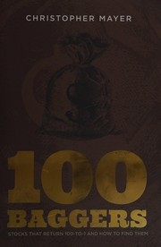
ADVANCED VALUATION · ADVANCED
100 Baggers
Christopher Mayer
An empirical study of the traits shared by stocks that went on to multiply their value a hundredfold.
View on Amazon
Deep Value
ADVANCED VALUATION · ADVANCED
Deep Value
Tobias Carlisle
Extreme contrarian investing in beaten-down companies, and how mean reversion produces returns.
View on Amazon
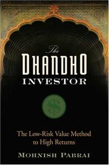
ADVANCED VALUATION · ADVANCED
The Dhandho Investor
Mohnish Pabrai
How to structure asymmetric bets: very little downside, a lot of upside.
View on Amazon
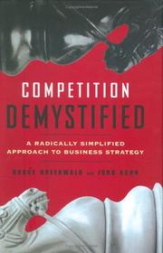
ADVANCED VALUATION · ADVANCED
Competition Demystified
Bruce Greenwald & Judd Kahn
Li Lu's reading listAn advanced strategic framework for judging the real barriers to entry in an industry.
View on Amazon
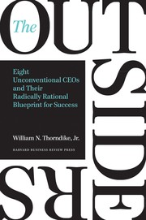
BUSINESS & ACCOUNTING · INTERMEDIATE TO ADVANCED
The Outsiders
William N. Thorndike
Charlie Munger's picksEight exceptional CEOs who beat the market by a wide margin thanks to masterful capital allocation.
View on Amazon
BUSINESS & ACCOUNTING · INTERMEDIATE TO ADVANCED
Financial Shenanigans
Howard Schilit
The essential guide to forensic accounting: how to spot the tricks and manipulations hidden in financial statements.
View on Amazon
BUSINESS & ACCOUNTING · INTERMEDIATE TO ADVANCED
The Interpretation of Financial Statements
Benjamin Graham
A short, practical book for quickly understanding what a company's numbers are saying.
View on Amazon
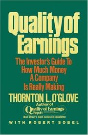
BUSINESS & ACCOUNTING · INTERMEDIATE TO ADVANCED
Quality of Earnings
Thornton L. O'glove
Teaches you to tell reported accounting profits apart from the cash a business can really sustain.
View on Amazon
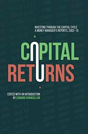
BUSINESS & ACCOUNTING · INTERMEDIATE TO ADVANCED
Capital Returns
Edward Chancellor
Letters from Marathon Asset Management on the capital cycle and why the supply side of an industry matters.
View on Amazon
The Art of Value Investing
BUSINESS & ACCOUNTING · INTERMEDIATE TO ADVANCED
The Art of Value Investing
John Heins & Whitney Tilson
Interviews and practical advice from dozens of successful value fund managers.
View on Amazon
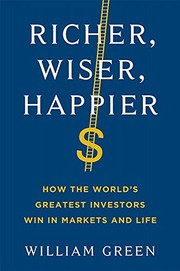
BUSINESS & ACCOUNTING · INTERMEDIATE TO ADVANCED
Richer, Wiser, Happier
William Green
The habits, research processes and life philosophies of some of the world's best investors.
View on Amazon
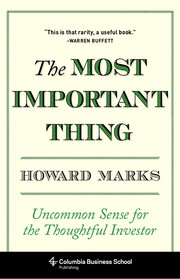
PSYCHOLOGY & HISTORY · ALL LEVELS
The Most Important Thing
Howard Marks
Master classes on second-level thinking, controlling risk and the psychology of markets.
View on Amazon
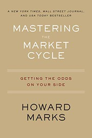
PSYCHOLOGY & HISTORY · ALL LEVELS
Mastering the Market Cycle
Howard Marks
How to tell where we stand in the economic and credit cycle, and adjust a portfolio's risk accordingly.
View on Amazon
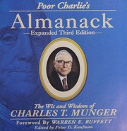
PSYCHOLOGY & HISTORY · ALL LEVELS
Poor Charlie's Almanack
Charles T. Munger, ed. Peter D. Kaufman
Li Lu's reading listWarren Buffett's picksCharlie Munger's talks on multidisciplinary mental models and rational decision-making.
View on Amazon
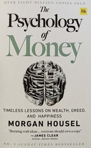
PSYCHOLOGY & HISTORY · ALL LEVELS
The Psychology of Money
Morgan Housel
Short stories on how emotions, luck and ego shape financial success far more than intelligence does.
View on Amazon
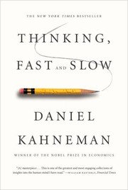
PSYCHOLOGY & HISTORY · ALL LEVELS
Thinking, Fast and Slow
Daniel Kahneman
The landmark book of behavioural economics on the cognitive biases that trip up investors.
View on Amazon
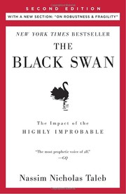
PSYCHOLOGY & HISTORY · ALL LEVELS
The Black Swan
Nassim Nicholas Taleb
The impact of highly improbable, unpredictable events, and the fragility of traditional financial models.
View on Amazon
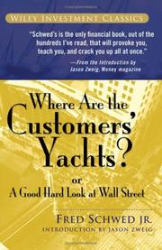
PSYCHOLOGY & HISTORY · ALL LEVELS
Where Are the Customers' Yachts?
Fred Schwed Jr.
Li Lu's reading listWarren Buffett's picksA satirical 1940 classic that exposes Wall Street's illusions and conflicts of interest with humour.
View on Amazon
PSYCHOLOGY & HISTORY · ALL LEVELS
A Short History of Financial Euphoria
John Kenneth Galbraith
A tour of the great speculative bubbles, to learn to recognise collective irrationality.
View on Amazon
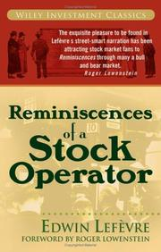
PSYCHOLOGY & HISTORY · ALL LEVELS
Reminiscences of a Stock Operator
Edwin Lefèvre
Li Lu's reading listA book about speculation, yet revered by value investors for its timeless lessons on crowd psychology.
View on Amazon
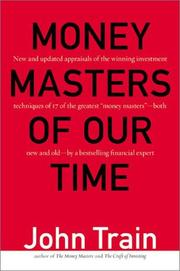
FOUNDATIONS · BEGINNER TO INTERMEDIATE
Money Masters of Our Time
John Train
Li Lu's reading listProfiles of great investors, from Buffett and Templeton to Lynch and Soros, and the habits behind each one's method.
View on Amazon
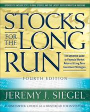
FOUNDATIONS · BEGINNER TO INTERMEDIATE
Stocks for the Long Run
Jeremy J. Siegel
Li Lu's reading listTwo centuries of returns on stocks, bonds, bills and gold, and why time in the market matters more than timing it.
View on Amazon
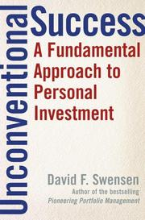
FOUNDATIONS · BEGINNER TO INTERMEDIATE
Unconventional Success
David F. Swensen
Li Lu's reading listThe man who ran Yale's endowment on how individuals should invest: broad diversification, low costs and a healthy distrust of the fund industry.
View on Amazon
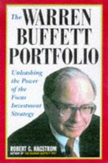
ADVANCED VALUATION · ADVANCED
The Warren Buffett Portfolio
Robert G. Hagstrom
Charlie Munger's picksLi Lu's reading listFocus investing: owning a few businesses you understand well, holding them for years, and the maths of a concentrated portfolio.
View on Amazon
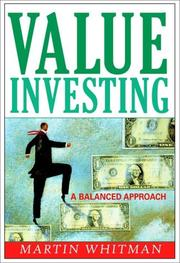
ADVANCED VALUATION · ADVANCED
Value Investing: A Balanced Approach
Martin J. Whitman
Li Lu's reading listThe founder of Third Avenue on "safe and cheap": strong balance sheets bought below their value, read like a creditor would.
View on Amazon
Classics: An Investor's Anthology
ADVANCED VALUATION · ADVANCED
Classics: An Investor's Anthology
Charles D. Ellis & James R. Vertin (eds.)
Li Lu's reading listA collection of the best essays and articles ever written on investing, by the field's great names.
View on Amazon
ADVANCED VALUATION · ADVANCED
Classics II: Another Investor's Anthology
Charles D. Ellis & James R. Vertin (eds.)
Li Lu's reading listThe second volume of the anthology, with more classic pieces on markets, valuation and investor behaviour.
View on Amazon
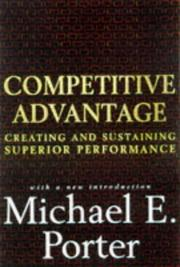
BUSINESS & ACCOUNTING · INTERMEDIATE TO ADVANCED
Competitive Advantage
Michael E. Porter
Li Lu's reading listThe value chain and the two ways a company can win, lower costs or real differentiation: the base of any moat analysis.
View on Amazon
BUSINESS & ACCOUNTING · INTERMEDIATE TO ADVANCED
The Innovators
Walter Isaacson
Li Lu's reading listHow the digital revolution was built, from Ada Lovelace to the internet, and why it came from teams rather than lone geniuses.
View on Amazon
ECONOMICS & CAPITALISM · ALL LEVELS
Profits and the Future of American Society
S. Jay Levy & David A. Levy
Li Lu's reading listWhere corporate profits come from at the level of the whole economy: the profits equation that Li Lu often cites.
View on Amazon
ECONOMICS & CAPITALISM · ALL LEVELS
The Other Half of Macroeconomics and the Fate of Globalization
Richard C. Koo
Li Lu's reading listBalance-sheet recessions: why economies stall when companies and households pay down debt instead of borrowing, and what governments can do.
View on Amazon
ECONOMICS & CAPITALISM · ALL LEVELS
The Wealth and Poverty of Nations
David S. Landes
Charlie Munger's picksLi Lu's reading listA sweeping history of why some countries grew rich and others did not, with culture and institutions at the centre.
View on Amazon
ECONOMICS & CAPITALISM · ALL LEVELS
Capitalism, Socialism and Democracy
Joseph A. Schumpeter
Li Lu's reading listThe 1942 classic that coined "creative destruction": how capitalism grows by constantly replacing the old with the new.
View on Amazon
ECONOMICS & CAPITALISM · ALL LEVELS
The Road to Serfdom
F. A. Hayek
Li Lu's reading listHayek's 1944 warning that central planning, however well meant, ends up eroding economic and political freedom.
View on Amazon
ECONOMICS & CAPITALISM · ALL LEVELS
Economics as Ideology
Kenneth R. Hoover
Li Lu's reading listKeynes, Laski and Hayek side by side: how three economists' ideas shaped the politics of the twentieth century.
View on Amazon
ECONOMICS & CAPITALISM · ALL LEVELS
Capitalism in America: A History
Alan Greenspan & Adrian Wooldridge
Li Lu's reading listThe economic history of the United States since 1776, told through productivity, entrepreneurs and creative destruction.
View on Amazon
ECONOMICS & CAPITALISM · ALL LEVELS
Wall Street: A History
Charles R. Geisst
Li Lu's reading listThe story of America's financial centre from colonial times to today: its booms, crashes, scandals and reforms.
View on Amazon
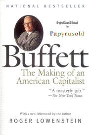
PSYCHOLOGY & HISTORY · ALL LEVELS
Buffett: The Making of an American Capitalist
Roger Lowenstein
Li Lu's reading listThe classic biography of Warren Buffett, from Omaha to Berkshire Hathaway, and how his temperament shaped his investing.
View on Amazon
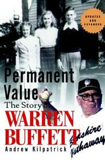
PSYCHOLOGY & HISTORY · ALL LEVELS
Of Permanent Value: The Story of Warren Buffett
Andrew Kilpatrick
Li Lu's reading listA huge, anecdote-packed chronicle of Buffett and Berkshire, from early partnerships to annual-meeting moments.
View on Amazon
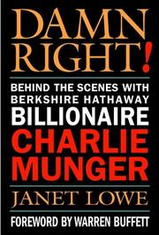
PSYCHOLOGY & HISTORY · ALL LEVELS
Damn Right!
Janet Lowe
Li Lu's reading listThe life of Charlie Munger: his family, his law career, Wesco and his decades-long partnership with Buffett.
View on Amazon
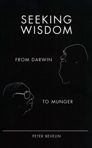
PSYCHOLOGY & HISTORY · ALL LEVELS
Seeking Wisdom: From Darwin to Munger
Peter Bevelin
Li Lu's reading listWarren Buffett's picksMunger's mental models gathered from psychology, biology and physics, put to work on avoiding errors of judgement.
View on Amazon
PSYCHOLOGY & HISTORY · ALL LEVELS
Benjamin Graham: The Memoirs of the Dean of Wall Street
Benjamin Graham
Li Lu's reading listGraham tells his own life: a childhood in poverty, success and near-ruin on Wall Street, and decades teaching at Columbia.
View on Amazon
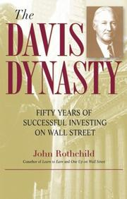
PSYCHOLOGY & HISTORY · ALL LEVELS
The Davis Dynasty
John Rothchild
Li Lu's reading listThree generations of the Davis family of investors, and how a patient bet on insurance stocks compounded for fifty years.
View on Amazon
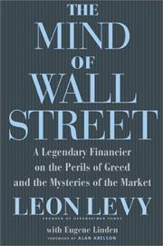
PSYCHOLOGY & HISTORY · ALL LEVELS
The Mind of Wall Street
Leon Levy & Eugene Linden
Li Lu's reading listA legendary investor's reflections on market psychology, greed and the mistakes even professionals keep repeating.
View on Amazon
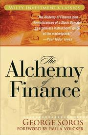
PSYCHOLOGY & HISTORY · ALL LEVELS
The Alchemy of Finance
George Soros
Li Lu's reading listSoros explains reflexivity, how investors' beliefs change the fundamentals they analyse, with a diary of his own trades.
View on Amazon
PSYCHOLOGY & HISTORY · ALL LEVELS
Soros on Soros
George Soros
Li Lu's reading listLong conversations with Soros about his life, his theory of reflexivity, his fund and his philanthropy.
View on Amazon
PSYCHOLOGY & HISTORY · ALL LEVELS
Extraordinary Popular Delusions and the Madness of Crowds
Charles Mackay
Li Lu's reading listThe 1841 classic on tulip mania, the South Sea Bubble and other episodes when whole crowds lost their heads over money.
View on Amazon
PSYCHOLOGY & HISTORY · ALL LEVELS
Manias, Panics, and Crashes
Charles P. Kindleberger
Li Lu's reading listA history of financial crises that shows the same pattern every time: displacement, euphoria, distress and panic.
View on Amazon
PSYCHOLOGY & HISTORY · ALL LEVELS
Wealth, War and Wisdom
Barton Biggs
Li Lu's reading listHow markets behaved before, during and after the Second World War, and what that teaches about protecting wealth.
View on Amazon

PSYCHOLOGY & HISTORY · ALL LEVELS
Principles: Life and Work
Ray Dalio
Li Lu's reading listThe rules Ray Dalio developed building Bridgewater, on decision-making, radical transparency and learning from mistakes.
View on Amazon
A Few Lessons for Investors and Managers from Warren E. Buffett
FOUNDATIONS · BEGINNER TO INTERMEDIATE
A Few Lessons for Investors and Managers from Warren E. Buffett
Peter Bevelin
Warren Buffett's picksBuffett's thinking on business, investing and management, distilled from his letters into short lessons by theme.
View on Amazon
FOUNDATIONS · BEGINNER TO INTERMEDIATE
Berkshire Hathaway Letters to Shareholders 1965-2014
Warren Buffett, ed. Max Olson
Warren Buffett's picksFifty years of Buffett's letters in one volume: the best way to watch his thinking develop, year by year.
View on Amazon
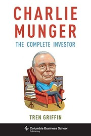
FOUNDATIONS · BEGINNER TO INTERMEDIATE
Charlie Munger: The Complete Investor
Tren Griffin
Warren Buffett's picksMunger's scattered principles on investing and mental models, put together into one coherent approach.
View on Amazon
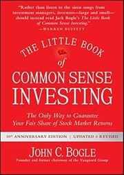
FOUNDATIONS · BEGINNER TO INTERMEDIATE
The Little Book of Common Sense Investing
John C. Bogle
Warren Buffett's picksBogle's case for low-cost index funds, the approach Buffett recommends to most people who invest.
View on Amazon
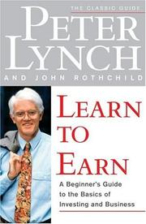
FOUNDATIONS · BEGINNER TO INTERMEDIATE
Learn to Earn
Peter Lynch & John Rothchild
Peter LynchLynch's beginner's guide to how companies, capitalism and the stock market work, written with young readers in mind.
View on Amazon
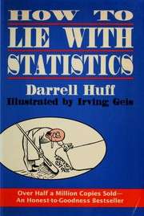
ADVANCED VALUATION · ADVANCED
How to Lie with Statistics
Darrell Huff
Bill Gates's picksA short 1954 classic on how charts and averages mislead, still a useful check before trusting any number.
View on Amazon
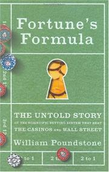
ADVANCED VALUATION · ADVANCED
Fortune's Formula
William Poundstone
Charlie Munger's picksHow Claude Shannon and Ed Thorp used the Kelly criterion to size bets at the casino and on Wall Street.
View on Amazon
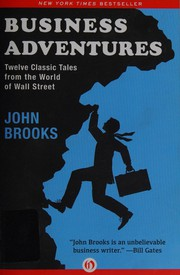
BUSINESS & ACCOUNTING · INTERMEDIATE TO ADVANCED
Business Adventures
John Brooks
Warren Buffett's picksBill Gates's picksTwelve classic New Yorker stories from corporate America, from the Ford Edsel to Xerox: Gates's favourite business book, lent to him by Buffett.
View on Amazon
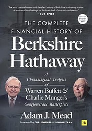
BUSINESS & ACCOUNTING · INTERMEDIATE TO ADVANCED
The Complete Financial History of Berkshire Hathaway
Adam J. Mead
Warren Buffett's picksBerkshire year by year through its numbers: each acquisition, each capital decision and what it did to the results.
View on Amazon
Capital Allocation: The Financials of a New England Textile Mill 1955-1985
BUSINESS & ACCOUNTING · INTERMEDIATE TO ADVANCED
Capital Allocation: The Financials of a New England Textile Mill 1955-1985
Jacob McDonough
Warren Buffett's picksThe accounts of the textile mill Buffett bought, and how he slowly moved its capital into far better businesses.
View on Amazon
Margin of Trust: The Berkshire Business Model
BUSINESS & ACCOUNTING · INTERMEDIATE TO ADVANCED
Margin of Trust: The Berkshire Business Model
Lawrence A. Cunningham & Stephanie Cuba
Warren Buffett's picksWhy Berkshire's hands-off model works: trust between headquarters and its managers as a competitive advantage.
View on Amazon
The Ten Commandments for Business Failure
BUSINESS & ACCOUNTING · INTERMEDIATE TO ADVANCED
The Ten Commandments for Business Failure
Donald R. Keough
Warren Buffett's picksA former Coca-Cola president lists the sure ways to ruin a company, from quitting taking risks to ignoring customers.
View on Amazon
BUSINESS & ACCOUNTING · INTERMEDIATE TO ADVANCED
Unscripted
James B. Stewart & Rachel Abrams
Warren Buffett's picksThe fight for control of CBS and Viacom inside the Redstone family: governance at its messiest.
View on Amazon
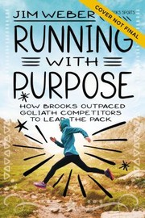
BUSINESS & ACCOUNTING · INTERMEDIATE TO ADVANCED
Running with Purpose
Jim Weber
Warren Buffett's picksHow Brooks, a Berkshire company, nearly failed and then won by focusing only on running shoes.
View on Amazon
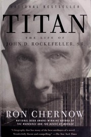
BUSINESS & ACCOUNTING · INTERMEDIATE TO ADVANCED
Titan: The Life of John D. Rockefeller, Sr.
Ron Chernow
Charlie Munger's picksRockefeller and the building of Standard Oil: scale, cost control and the monopoly that followed.
View on Amazon
BUSINESS & ACCOUNTING · INTERMEDIATE TO ADVANCED
Andrew Carnegie
David Nasaw
Charlie Munger's picksThe life of the steel magnate who built an industry on relentless cost cutting and then gave his fortune away.
View on Amazon
BUSINESS & ACCOUNTING · INTERMEDIATE TO ADVANCED
Only the Paranoid Survive
Andrew S. Grove
Charlie Munger's picksIntel's Andy Grove on strategic inflection points, the moments when a business must change or decline.
View on Amazon
BUSINESS & ACCOUNTING · INTERMEDIATE TO ADVANCED
Barbarians at the Gate
Bryan Burrough & John Helyar
Charlie Munger's picksThe 1988 battle for RJR Nabisco, the leveraged buyout that defined the excesses of the decade.
View on Amazon
BUSINESS & ACCOUNTING · INTERMEDIATE TO ADVANCED
Master of the Game
Connie Bruck
Charlie Munger's picksSteve Ross's deal-making path from funeral parlours and parking lots to building Time Warner.
View on Amazon
BUSINESS & ACCOUNTING · INTERMEDIATE TO ADVANCED
Distant Force: A Memoir of the Teledyne Corporation
George A. Roberts
Charlie Munger's picksTeledyne from the inside: how Henry Singleton built and allocated capital in one of the great conglomerates.
View on Amazon
BUSINESS & ACCOUNTING · INTERMEDIATE TO ADVANCED
Hard Drive: Bill Gates and the Making of the Microsoft Empire
James Wallace & Jim Erickson
Charlie Munger's picksThe early years of Bill Gates and Microsoft, and the competitive drive that built a software empire.
View on Amazon
BUSINESS & ACCOUNTING · INTERMEDIATE TO ADVANCED
In the Plex
Steven Levy
Charlie Munger's picksInside Google: its engineering culture, its business model and how it makes decisions.
View on Amazon
BUSINESS & ACCOUNTING · INTERMEDIATE TO ADVANCED
Conspiracy of Fools
Kurt Eichenwald
Charlie Munger's picksThe detailed story of Enron's collapse and of the incentives and accounting that allowed it.
View on Amazon
BUSINESS & ACCOUNTING · INTERMEDIATE TO ADVANCED
Men and Rubber: The Story of Business
Harvey S. Firestone & Samuel Crowther
Charlie Munger's picksThe founder of Firestone on building a tyre company: cost, customers and keeping things simple.
View on Amazon
BUSINESS & ACCOUNTING · INTERMEDIATE TO ADVANCED
Les Schwab: Pride in Performance
Les Schwab
Charlie Munger's picksHow a tyre-store founder shared profits with his employees and built a lasting business on incentives.
View on Amazon
BUSINESS & ACCOUNTING · INTERMEDIATE TO ADVANCED
Shoe Dog
Phil Knight
Bill Gates's picksNike's founder on the early years: debts, near-failures and the obsession it took to build the company.
View on Amazon
ECONOMICS & CAPITALISM · ALL LEVELS
Americana: A 400-Year History of American Capitalism
Bhu Srinivasan
Warren Buffett's picksAmerican capitalism told through its industries and entrepreneurs, from the colonies to Silicon Valley.
View on Amazon
ECONOMICS & CAPITALISM · ALL LEVELS
Trillion Dollar Triage
Nick Timiraos
Warren Buffett's picksHow Jay Powell's Federal Reserve fought the 2020 pandemic crash, from the inside.
View on Amazon
ECONOMICS & CAPITALISM · ALL LEVELS
Stress Test
Timothy F. Geithner
Bill Gates's picksThe former Treasury Secretary on fighting the 2008 financial crisis and the choices it forced.
View on Amazon
ECONOMICS & CAPITALISM · ALL LEVELS
How Asia Works
Joe Studwell
Bill Gates's picksWhy some Asian economies boomed and others stalled: land reform, export manufacturing and control of finance.
View on Amazon
ECONOMICS & CAPITALISM · ALL LEVELS
Capital in the Twenty-First Century
Thomas Piketty
Bill Gates's picksThree centuries of data on wealth and inequality, and the argument that returns on capital outpace growth.
View on Amazon
Capitalism Without Capital
ECONOMICS & CAPITALISM · ALL LEVELS
Capitalism Without Capital
Jonathan Haskel & Stian Westlake
Bill Gates's picksThe rise of the intangible economy, software, brands and know-how, and why it changes how businesses are valued.
View on Amazon
PSYCHOLOGY & HISTORY · ALL LEVELS
The Great Crash 1929
John Kenneth Galbraith
Warren Buffett's picksGalbraith's account of the speculation of the late 1920s and the collapse that followed.
View on Amazon
PSYCHOLOGY & HISTORY · ALL LEVELS
All I Want to Know Is Where I'm Going to Die So I'll Never Go There
Peter Bevelin
Warren Buffett's picksBuffett's and Munger's sayings on mistakes, incentives and common sense, gathered by theme.
View on Amazon
PSYCHOLOGY & HISTORY · ALL LEVELS
Influence: The Psychology of Persuasion
Robert B. Cialdini
Warren Buffett's picksCharlie Munger's picksThe six principles of persuasion, from reciprocity to scarcity: the book Munger gave away more than any other.
View on Amazon
PSYCHOLOGY & HISTORY · ALL LEVELS
Pre-Suasion
Robert B. Cialdini
Warren Buffett's picksWhat happens before a message is delivered, and how that moment makes people receptive to it.
View on Amazon
PSYCHOLOGY & HISTORY · ALL LEVELS
Tap Dancing to Work
Carol J. Loomis
Warren Buffett's picksBill Gates's picksDecades of Fortune articles by and about Buffett, collected by his longtime friend and editor.
View on Amazon
PSYCHOLOGY & HISTORY · ALL LEVELS
Fiasco: The Inside Story of a Wall Street Trader
Frank Partnoy
Charlie Munger's picksA former derivatives salesman on how 1990s Wall Street sold complex products to clients who did not understand them.
View on Amazon
PSYCHOLOGY & HISTORY · ALL LEVELS
Getting to Yes
Roger Fisher, William Ury & Bruce Patton
Charlie Munger's picksPrincipled negotiation: argue about interests, not positions, and look for options that work for both sides.
View on Amazon
PSYCHOLOGY & HISTORY · ALL LEVELS
Getting It Done
Roger Fisher & Alan Sharp
Charlie Munger's picksHow to lead and get results in an organisation when you are not the one in charge.
View on Amazon
PSYCHOLOGY & HISTORY · ALL LEVELS
Judgment in Managerial Decision Making
Max H. Bazerman
Charlie Munger's picksThe biases that distort managers' decisions, and practical ways to correct for them.
View on Amazon
PSYCHOLOGY & HISTORY · ALL LEVELS
The Autobiography of Benjamin Franklin
Benjamin Franklin
Charlie Munger's picksFranklin on thrift, self-improvement and practical wisdom: one of Munger's lifelong heroes.
View on Amazon
No books in this theme yet.
Cover images: Open Library.